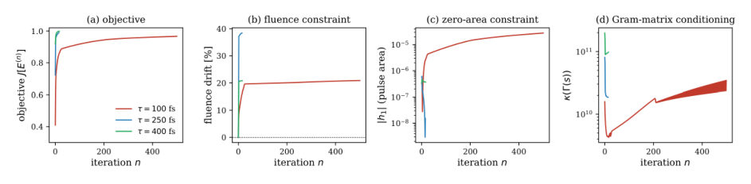

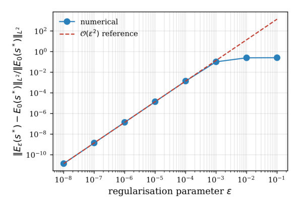
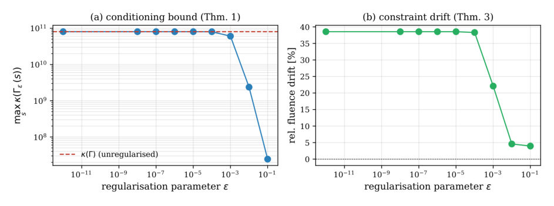
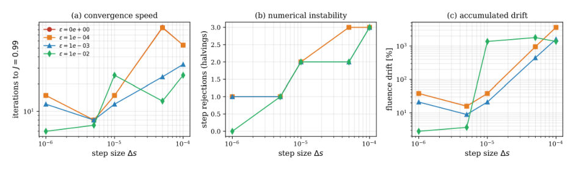
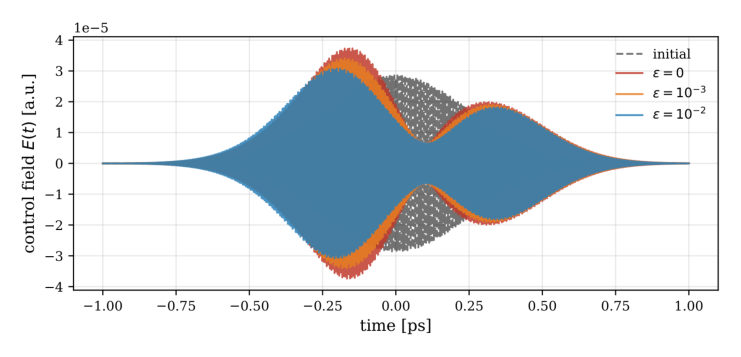
← Index · ← Previous · Next →
Authors: Tanveer Ahmad
Type: theory · Category: numerical methods · PDF: https://arxiv.org/pdf/2604.26625v1
Analysis basis: full PDF text, analyzed in chunks
Topic relevance: Rydberg arrays 2/5 · methods for driven-dissipative 2/5





Main problem. Numerical instability and constraint violations in equality-constrained bilinear quantum control when the Gram matrix is ill-conditioned during discretization.
Main result. The introduction of a Tikhonov-regularised projected gradient flow that guarantees objective monotonicity, provides explicit error bounds for constraint drift, and establishes a discrete CFL criterion for stability.
Method. Tikhonov regularisation of the moving Gram matrix (Gamma_epsilon = Gamma + epsilon^2 I) combined with a forward-Euler discretization scheme and spectral identity analysis.
Summary. This paper addresses the numerical instability encountered when optimizing quantum control pulses subject to equality constraints. By applying Tikhonov regularisation to the Gram matrix, the author develops a new projected gradient flow that prevents the algorithm from crashing due to ill-conditioned matrices. The work provides rigorous proofs that this regularisation maintains objective ascent and bounds the error in constraint satisfaction. Numerical tests on a three-level system demonstrate that this method significantly reduces constraint drift and eliminates the need for heuristic step-size adjustments.
Model / system. A bilinear quantum control model where a d-level system evolves under a Hamiltonian H(t) = H0 - mu E(t). The benchmark case is a three-level system for all-optical Bell-state preparation in dipole-dipole coupled atoms.
Key observables. Terminal fidelity (J), constraint drift (error in pulse area, fluence, and reference area), and the condition number of the Gram matrix.
Important parameters / regimes. Regularisation parameter (epsilon), discretization step size (Delta s), and the second variation of the objective (G).
Assumptions / limitations. The Gram matrix is assumed to be uniformly invertible for the convergence proof, and the objective function is assumed to be smooth.
Figures summary. The paper includes plots showing the convergence of the regularised trajectory to the unregularised one over eight decades of epsilon, and the reduction of constraint drift and step rejections using moderate regularisation.
Paper structure. The paper introduces the instability problem, proposes the Tikhonov-regularised flow, provides a rigorous mathematical framework (theorems on monotonicity, drift, and convergence), presents a discrete stability criterion (CFL), and validates the theory using a three-level atomic benchmark.
Why it may be interesting. It provides a mathematically rigorous way to stabilize pulse optimization in quantum technologies like Rydberg gates or superconducting qubits, where physical constraints (like energy budgets) are critical and numerical stability is often difficult to maintain.
We study a projection-type gradient flow for equality-constrained maximisation of a smooth bilinear control objective on $\mathcal{H}=L^2(0,T;\mathbb{R})$, eliminating Lagrange multipliers through an $(M{+}1)\times(M{+}1)$ moving Gram matrix $Γ(s)_{\ell\ell'}=\int_0^T S(t)\,c_\ell(s,t)\,c_{\ell'}(s,t)\,\mathrm{d}t$. The flow generates monotonic ascent in continuous time but becomes unstable on discretisation; existing implementations rely on heuristic step-size safeguards lacking rigorous justification. We close this gap by replacing $Γ$ with $Γ_{\varepsilon}:=Γ+\varepsilon^{2}I$ and prove: (i) an exact spectral identity giving $κ(Γ_{\varepsilon})=(σ_{\max}^{2}+\varepsilon^{2})/(σ_{\min}^{2}+\varepsilon^{2})$; (ii) objective monotonicity $\mathrm{d}J/\mathrm{d}s\ge 0$ for all $\varepsilon\ge 0$; (iii) constraint drift $|h_{m}-C_{m}|=\mathcal{O}(\varepsilon^{2})$ with a computable prefactor; (iv) convergence of the regularised trajectory to the unregularised one in $L^{2}(0,T)$ at rate $\mathcal{O}(\varepsilon^{2})$ under uniform invertibility of $Γ$; and (v) a discrete CFL criterion $Δs\,G\,\|Γ_{\varepsilon}^{-1}\|\leα<2$ guaranteeing objective monotonicity of the forward-Euler scheme up to $\mathcal{O}(Δs^{2})$ local truncation error. The theory is validated on a three-level bilinear benchmark for all-optical Bell-state preparation, where $κ(Γ)\in[10^{9},10^{11}]$, the predicted $\varepsilon^{2}$ rate is confirmed over eight decades, and moderate regularisation eliminates step rejections and reduces constraint drift by more than an order of magnitude at unchanged final fidelity.
Authors: Adrian Kent
Type: theory · Category: other · PDF: https://arxiv.org/pdf/2604.26530v1
Analysis basis: full PDF text, analyzed in chunks
Topic relevance: quantum measurements 2/5 · entanglement & information structure 1/5
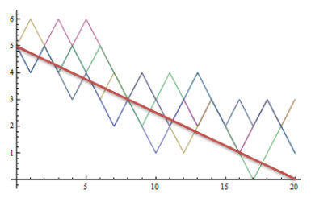
Main problem. The paper addresses the lack of a unified account of quantum measurement, the role of consciousness in physical laws, and the existential risks posed by potential discoveries in post-quantum physics and AGI.
Main result. The author proposes that a convergence of quantum theory, gravity, and consciousness may lead to new 'beable-guided' evolution laws, which could fundamentally transform information processing and necessitate new frameworks for evaluating high-impact, low-probability existential risks.
Method. The author uses algorithmic compressibility (Kolmogorov complexity and MDL) to evaluate scientific testability and applies risk assessment metrics to quantify the potential impact of new physical hypotheses.
Summary. This paper explores the intersection of fundamental physics, consciousness, and the future of humanity. The author argues that moving beyond standard quantum theory toward models that include 'beables' or consciousness-linked evolution could revolutionize computation and AI. This transition carries significant existential risks that require a new approach to scientific risk assessment. Ultimately, the work posits a convergence of gravity, quantum mechanics, and consciousness into a single, richer physical theory.
Model / system. The paper discusses various theoretical frameworks, including dynamical collapse models (GRWP), hodological models of path-dependent evolution, and the Ehrenfest urn model to illustrate path-guided laws.
Key observables. Asymptotic late-time states of fields, gravitationally-induced entanglement, and deviations in quantum computing outputs.
Important parameters / regimes. The parameter window for spontaneous localization in GRWP models and the probability bounds for high-impact physical hypotheses.
Assumptions / limitations. The author assumes that a unified theory of nature is possible and that the quantum measurement problem implies the existence of physics beyond standard quantum theory.
Figures summary. Figure 1 illustrates the effects of a simple hodological rule within a toy model, showing how path-guided laws can steer a system toward specific outcomes compared to Newtonian dynamics.
Paper structure. The paper begins with a retrospective on the foundations of physics, moves into specific critiques of existing quantum interpretations, proposes new 'beable' and 'hodological' frameworks, and concludes by connecting these physical theories to the broader implications for AI and existential risk.
Over the past 25 years, I have been involved in some intriguing developments in the foundations of physics, exploring the quantum reality problem, the relationship between quantum theory and gravity and the interplay between consciousness and physical laws. These investigations make it plausible that we will find physics beyond quantum theory, potentially including both new evolution laws and new types of measurement. There is also a significant chance they could have potentially transformative impact on information processing and on the development of and our future with AI.
Authors: Akhil Kumar Awasthi, Mrinmoy Samanta, Sudipta Mondal, Ayan Patra, Aditi Sen De
Type: theory · Category: quantum information and computing · PDF: https://arxiv.org/pdf/2604.26392v1
Analysis basis: full PDF text, analyzed in chunks
Topic relevance: entanglement & information structure 2/5 · non-equilibrium dynamics 1/5
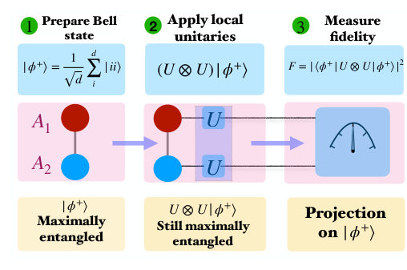
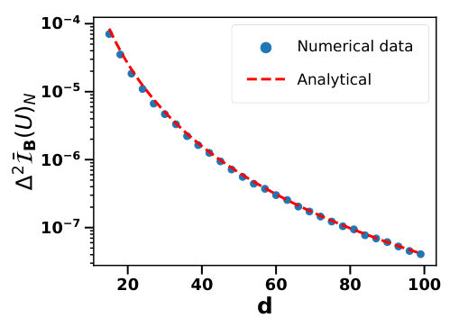
Main problem. Quantifying the 'imaginarity-generating power' (IGP) of unitary dynamics, which refers to the ability of unitary operations to produce complex-valued features from initially real quantum states.
Main result. The authors derive an exact expression for the purity-constrained IGP and prove that for Haar-random unitaries in high dimensions, the IGP concentrates near its maximum value, meaning typical high-dimensional dynamics are highly effective at generating imaginarity.
Method. The study employs the framework of Dynamical Resource Theories (DRT), using the Hilbert-Schmidt norm to quantify imaginarity, Weingarten calculus for Haar averages, and Levy's Lemma to derive concentration bounds.
Summary. This paper introduces a new way to quantify how much 'imaginarity' (complex-valuedness) a quantum operation can create from real-valued states. Using resource theory and random matrix theory, the authors show that most high-dimensional quantum gates are extremely efficient at generating this resource. They provide exact formulas for this power based on the gate's properties and propose an experimental protocol to measure it using entanglement fidelity.
Model / system. The model considers arbitrary finite-dimensional Hilbert spaces (qudits) subject to unitary dynamics $U \in U(d)$ acting on real density matrices.
Key observables. Imaginarity-generating power (IGP), purity ($P$), and the trace-based quantity $|Tr(U^dagger U^*)|^2$.
Important parameters / regimes. Dimension ($d$), purity ($P$), and the large-dimension limit ($d o \infty$).
Assumptions / limitations. The resource theory is basis-dependent (fixed computational basis) and focuses on unitary dynamics rather than general noisy CPTP maps.
Figures summary. A log-scale plot showing the scaling of the variance of the normalized IGP with dimension, demonstrating agreement between numerical data and the analytical $1/d^4$ prediction.
Paper structure. The paper introduces the concept of IGP, establishes the mathematical framework of the dynamical resource theory of imaginarity, derives exact analytical expressions for the IGP under purity constraints, characterizes maximizing unitaries, and uses random matrix theory to study the statistical concentration of the resource in high dimensions.
Why it may be interesting. This work provides a fundamental characterization of how the complex structure of quantum mechanics is dynamically activated, which is relevant for understanding the complexity of quantum circuits and the distinction between real and complex quantum theories.
Imaginarity, stemming from the complex structure of quantum mechanics, has recently emerged as a fundamental resource, yet its dynamical generation remains largely unexplored. In this work, we introduce the notion of imaginarity-generating power (IGP) of unitary dynamics, which quantifies the ability of unitary operations to produce imaginarity from initially real quantum states. To quantify imaginarity, we employ a measure based on the Hilbert--Schmidt norm, which we show to be monotone under real unital operations. Within the framework of dynamical resource theories, we derive an exact expression for the purity-constrained IGP in arbitrary dimensions and show that, for pure real input states, it depends solely on intrinsic and experimentally accessible properties of the unitary. We further analyze its average behavior over ensembles of states with varying purity under both uniform and Hilbert--Schmidt distributions. We prove that it satisfies the essential properties of a valid resource monotone within the dynamical resource theory of imaginarity. We also characterize the unitaries that maximize the IGP and determine the corresponding bounds. Moreover, for Haar-random unitaries, we show that the IGP concentrates near its maximal value in high dimensions with small fluctuations, indicating that typical high-dimensional quantum dynamics are highly effective at generating imaginarity.
Authors: Jared Benson, C. E. Sturner, A. R. Huffman, Sanghyeok Park, Valentin John, Brighton X. Coe, Tyler J. Kovach, Stefan D. Oosterhout, Lucas E. A. Stehouwer, Francesco Borsoi, Giordano Scappucci, Menno Veldhorst, Benjamin D. Woods, Mark Friesen, M. A. Eriksson
Type: experiment · Category: quantum information and computing · PDF: https://arxiv.org/pdf/2604.26947v1
Analysis basis: full PDF text, analyzed in chunks
Topic relevance: QC/QI experiment 2/5 · quantum optics experiment 1/5
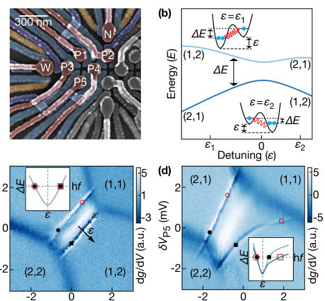
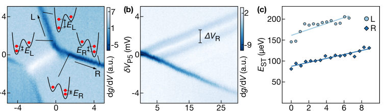
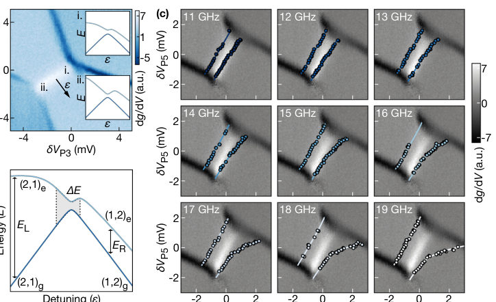
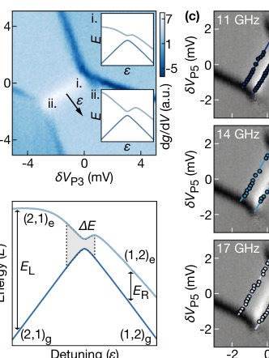
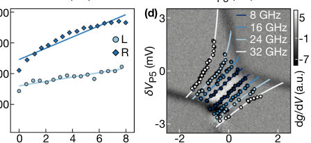
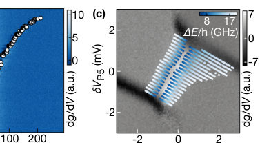
Main problem. Investigating the unexpected, strong dependence of orbital energy splittings (singlet-triplet splittings) on gate voltages in Ge/SiGe double quantum dots.
Main result. The researchers discovered that singlet-triplet splittings exhibit a strong, linear dependence on plunger gate voltages, which causes anomalous curvature in photon-assisted tunneling (PAT) resonance lines.
Method. The study combines photon-assisted tunneling (PAT) using microwave excitation with pulsed-gate spectroscopy to measure energy dispersions and splittings directly.
Summary. This paper identifies that orbital energy splittings in Ge/SiGe quantum dots change significantly with gate voltages, contradicting the standard assumption of constant splittings. By using photon-assisted tunneling and pulsed-gate spectroscopy, the authors demonstrate that these splittings follow a linear dependence on plunger gates. This discovery explains previously observed anomalous, curved resonance lines in PAT measurements. Understanding this dependence is crucial for the reliable control and readout of hole spin qubits in quantum computing applications.
Model / system. A double quantum dot (DQD) in a Ge/SiGe heterostructure featuring holes, modeled using a 4x4 Hamiltonian that incorporates gate-voltage-dependent ST splittings and crosstalk effects.
Key observables. Singlet-triplet (ST) splittings, detuning, photon-assisted tunneling resonance frequencies, and hole temperature.
Important parameters / regimes. Plunger gate voltages (V_P3, V_P5), tunnel couplings, lever arms, and hole temperature (measured at 94 mK).
Assumptions / limitations. The model assumes a linear gate-voltage dependence of the ST splittings to reconcile the experimental data.
Figures summary. Figure 1 shows device layout and PAT resonance patterns (straight vs. curved); Figure 2 presents charge stability diagrams and pulsed-gate spectroscopy results; Figure 3 illustrates the energy dispersion model; Figure 4 demonstrates model performance in different regimes; Supplemental figures show temperature measurement, device layout, and experimental setup.
Paper structure. The paper introduces the problem of gate-dependent orbital splittings, describes the Ge/SiGe DQD platform, presents experimental PAT and pulsed-gate data, proposes a modified model to account for linear voltage dependence, validates the model across different device tunings, and provides detailed experimental setup and calibration in the supplement.
Orbital energy splittings are important quantum dot parameters for the operation of hole spin qubits. They are known to depend on the lateral confinement of the quantum dots. However, when changing top, plunger gate voltages, which are the typical control parameter for qubit applications, such energy splitting changes are typically negligible, both as measured in experiment and as assumed in effective theories. Here, we study the singlet-triplet (ST) splittings, which depend on the orbital splittings, of a double quantum dot (DQD) in a Ge/SiGe heterostructure using photon-assisted tunneling (PAT) and pulsed-gate spectroscopy. We find that the ST splittings have a surprising, strong dependence on the top gate voltages, leading to anomalous PAT measurements. We combine data from both measurements in a model that well describes the linear gate-voltage dependence of the ST splittings. Finally, we show that the ST splittings of the two dots exhibit similar linear gate-voltage dependences when the device is retuned such that their ratio is significantly different.
Authors: Mar Tejedor, Javier Conejero, Rosa M. Badia
Type: both · Category: quantum information and computing · PDF: https://arxiv.org/pdf/2604.26788v1
Analysis basis: full PDF text, analyzed in chunks
Topic relevance: QC/QI experiment 2/5
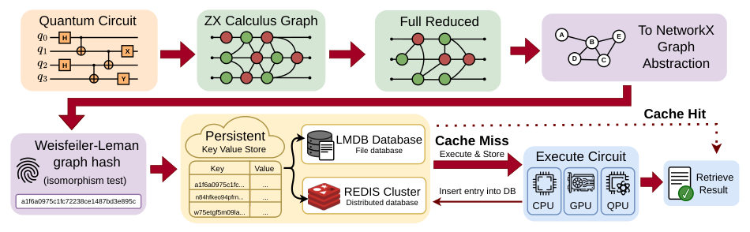
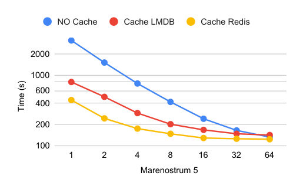
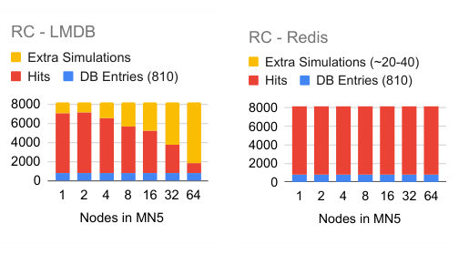
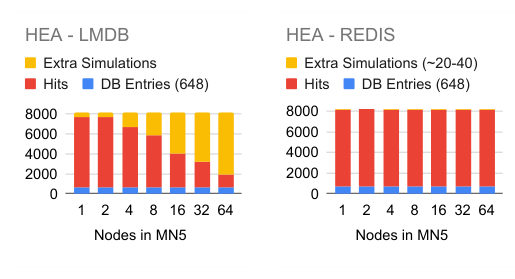
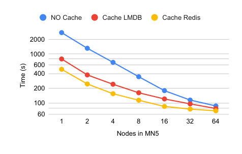
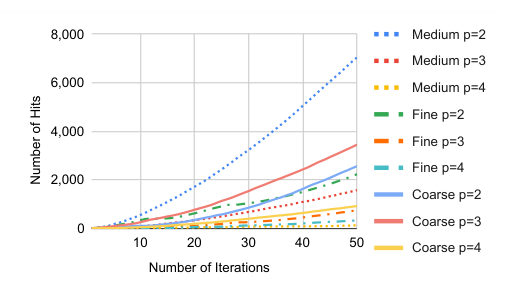
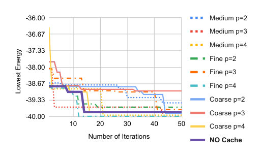
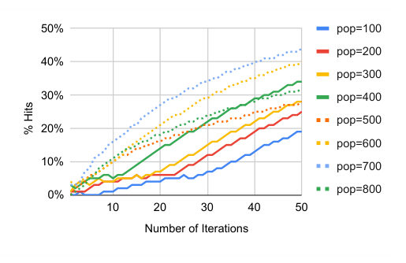
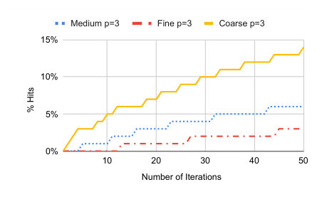
Main problem. Hybrid quantum-classical workflows suffer from massive computational redundancy because syntactically different circuits often implement identical operations, leading to wasted resources on CPUs, GPUs, and QPUs.
Main result. The Quantum Circuit Cache achieves up to 11.2x speedup on real QPU hardware and up to 7.0x on single-node simulations by identifying and reusing semantically equivalent circuits.
Method. A semantic hashing pipeline using ZX-calculance reduction and Weisfeiler-Lehman graph hashing to create deterministic fingerprints, stored in distributed LMDB or Redis databases.
Summary. This paper introduces a 'Quantum Circuit Cache' designed to eliminate redundant computations in hybrid quantum-classical workflows. By using ZX-calculus and graph hashing, the system identifies circuits that are structurally identical even if their gate sequences differ. This allows the system to reuse previously computed results from a distributed database, significantly accelerating tasks like circuit cutting and variational algorithm optimization on both classical supercomputers and real quantum hardware.
Model / system. The system was evaluated on the MareNostrum 5 supercomputer and the MareNostrum Ona 35-qubit superconducting quantum processor, using workloads like circuit cutting and QAOA optimization.
Key observables. Cache hit rate, speedup factors, execution time, and number of redundant simulations.
Important parameters / regimes. Circuit depth (p), number of wire cuts, discretization granularity for parameters, and storage backend type (LMDB vs. Redis).
Assumptions / limitations. The ZX-calculus reduction is intentionally incomplete (prioritizing scalability over formal completeness), and WL hashing is assumed to be practically collision-free.
Figures summary. Figure 1 shows the end-to-end workflow from circuit to cache; Figure 2 and 3 compare execution time and cache behavior for LMDB and Redis; Figure 4 shows performance on random circuits; Figure 6 and 7 illustrate QAOA convergence and cumulative hits; Figure 8 shows the trade-off between discretization and hit rate.
Paper structure. The paper introduces the problem of redundancy, describes the semantic hashing pipeline (ZX-calculus and WL hashing), details the storage architectures (LMDB/Redis), presents experimental evaluations on circuit cutting and QAOA workloads, and concludes with hardware validation and future work.
Hybrid quantum--classical workflows often execute large ensembles of circuits that differ syntactically but implement identical operations, leading to substantial redundant computation. To address this, we introduce the Quantum Circuit Cache, a content-addressable system that detects semantic equivalence and reuses previously computed results across executions, backends, and workflow stages. Our approach combines ZX-calculus reduction with isomorphism-invariant Weisfeiler--Leman graph hashing to generate deterministic circuit identifiers, enabling constant-time lookup in distributed caches supporting both lightweight LMDB and scalable Redis deployments. The system integrates transparently into hybrid HPC workflows and remains backend-agnostic across CPU, GPU, and QPU environments. We evaluate the system on MareNostrum 5 with two representative workloads: distributed wire cutting and Differential Evolution-based QAOA optimization. For wire cutting, caching eliminates up to 91.98% of redundant subcircuit simulations, yielding speedups up to 7.0 times on a single node and maintaining advantages at scale, with Redis-based caching achieving up to 1.6 times speedups under high parallelism. Validation on a 35-qubit superconducting QPU confirms these benefits, achieving an 11.2 times speedup on real hardware. In distributed QAOA optimization, equivalence-aware caching avoids up to 27.6% of circuit evaluations and consistently reduces execution cost without altering the optimization algorithm. In both cases, reuse grows with concurrency and circuit structure, highlighting redundancy as a major systems bottleneck and demonstrating the effectiveness of our Quantum Circuit Cache.
Authors: Qing-Hong Cao, Ying-Ying Li, Xiaohui Liu, Liang-Qi Zhang, Ke Zhao
Type: theory · Category: quantum information and computing · PDF: https://arxiv.org/pdf/2604.26226v1
Analysis basis: full PDF text, analyzed in chunks
Topic relevance: non-equilibrium dynamics 2/5
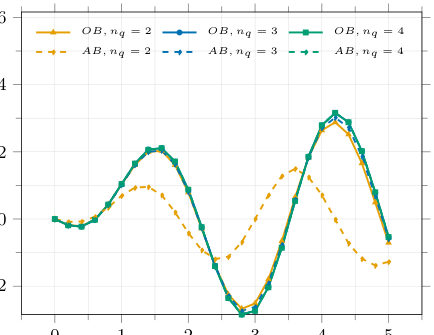
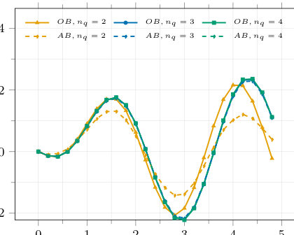
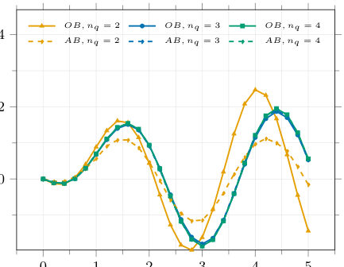
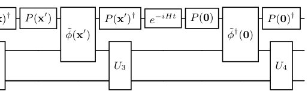
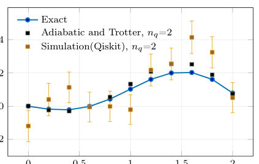
Main problem. The high circuit depth and large Trotter errors associated with standard Pauli-string decomposition in occupation-basis digitization for simulating scalar quantum field theories.
Main result. A diagonalization-based approach achieves exponential reductions in circuit depth and significantly mitigates Trotter errors, showing faster convergence than the amplitude-basis approach in certain regimes.
Method. Diagonalizing truncated field operators prior to Pauli decomposition to transform the interaction Hamiltonian into commuting Z-type strings, utilizing LCU and MCM techniques.
Summary. This paper presents an improved method for simulating scalar quantum field theories on quantum computers using occupation-basis digitization. By diagonalizing field operators before decomposing them into Pauli strings, the authors achieve an exponential reduction in circuit depth and significantly reduce Trotter errors. They demonstrate that this approach converges more rapidly than existing amplitude-basis methods for certain parameter regimes. The results provide a more efficient pathway for studying complex observables like energy-energy correlators on near-term quantum devices.
Model / system. A real scalar quantum field theory (phi^4 theory) in 2+1 dimensions, discretized on a 2x2 spatial lattice with periodic boundary conditions.
Key observables. Lorentzian energy-energy correlator (EEC) and energy-flow matrix elements.
Important parameters / regimes. Lattice spacing, mass (m0), coupling constant (lambda), and truncation size (nq).
Assumptions / limitations. The study assumes a truncated local Hilbert space which breaks canonical bosonic algebra, and focuses on a small 2x2 lattice representative example.
Figures summary. Circuit diagrams for operator products using LCU/MCM and plots showing the time-dependent expectation value of the energy-flux operator compared across exact, Trotterized, and Qiskit simulations.
Paper structure. The paper introduces the problem of digitization inefficiency, proposes a diagonalization-based algorithm, details the implementation via LCU and MCM, provides numerical benchmarks comparing the new method to the JLP amplitude-basis approach, and discusses scaling and limitations.
Why it may be interesting. The development of more efficient algorithms for simulating field theories is crucial for demonstrating quantum advantage and provides new tools for studying real-time dynamics and non-equilibrium processes on near-term quantum hardware.
Quantum simulations of scalar quantum field theories (QFT) provide important benchmarks for demonstrating quantum advantage. We revisit digitization in the occupation basis, which is typically hindered by unfavorable circuit depth scaling. We present an approach that achieves exponential reductions in circuit depth and significantly mitigates Trotter errors by diagonalizing field operators prior to their decomposition into Pauli strings. Focusing on a scalar QFT in 2+1 dimensions, we show that this method substantially reduces circuit depth and CNOT gate counts for time evolution. Using the Lorentzian energy-energy correlator as a benchmark observable, we find parameter regimes in which occupation-basis digitization converges more rapidly with respect to local truncation than the amplitude-basis approach of Jordan, Lee, and Preskill. These results provide both algorithmic advances and phenomenological benchmarks for studies of light-ray observables on near-term quantum devices.
Authors: A. Maiti, G. D. Gu, F. Massee
Type: experiment · Category: strongly correlated electrons · PDF: https://arxiv.org/pdf/2604.26002v1
Analysis basis: full PDF text, analyzed in chunks
Topic relevance: Kondo & dissipative impurity 2/5
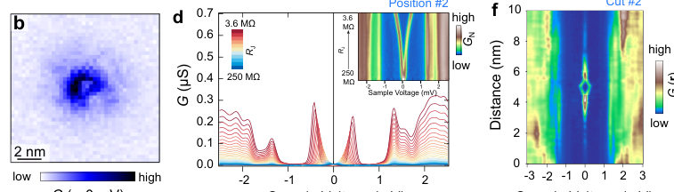
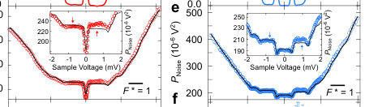
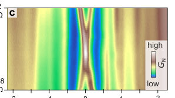
Main problem. Distinguishing true Majorana zero modes (MZMs) from topologically trivial 'impostor' states, such as Yu-Shiba-Rusinov (YSR) states, which produce nearly identical zero-bias conductance peaks.
Main result. Shot-noise spectroscopy reveals deviations in the Fano factor (F* != 1) that expose the trivial nature of zero-bias peaks, providing a decisive diagnostic tool that conductance spectroscopy alone lacks.
Method. Atomic-scale shot-noise spectroscopy using Scanning Tunneling Microscopy (STM) with cryogenic MHz circuitry to measure current noise and extract the effective Fano factor.
Summary. This paper addresses the difficulty of identifying Majorana zero modes in superconductors because trivial impurity states can mimic their signature in conductance measurements. By using atomic-scale shot-noise spectroscopy, the authors show that the Fano factor deviates from unity in a way that reveals the underlying particle and hole character of the states. This allows them to unambiguously identify 'impostor' states in Fe(Se,Te) that appear as robust zero-bias peaks in standard spectroscopy. The study establishes shot-noise as a powerful new diagnostic tool for topological physics.
Model / system. Sub-surface impurities and defect-bound states in the iron-based superconductor Fe(Se,Te) studied via a single-tip STM platform.
Key observables. Effective Fano factor (F*), differential conductance (dI/dV), junction resistance (RJ), and electron-hole asymmetry.
Important parameters / regimes. Junction resistance (RJ) used to tune electric fields, thermal broadening (~0.15 mV), and temperature (0.5 K).
Assumptions / limitations. The noise measurement baseline is established using a clean, fully gapped region where F* = 1 (Poissonian statistics).
Figures summary. Fig 1: STM topography and conductance maps showing localized defect states and peak splitting. Fig 2: Shot-noise spectroscopy showing F* deviations at zero-bias and split peaks. Fig 3: Shot-noise measurements during a quantum phase transition driven by junction resistance.
Paper structure. The paper introduces the problem of MZM impostors, describes the STM/shot-noise experimental setup, demonstrates the failure of conductance spectroscopy to detect hidden splitting, presents shot-noise as the solution by revealing F* deviations, and validates the method via a quantum phase transition.
A robust zero-bias conductance peak in putative $p$-wave superconductors is often regarded as the primary signature of a Majorana zero mode. Yet similar features can also arise from trivial bound states. This ambiguity has limited the reliability of conventional spectroscopy as a diagnostic tool, raising a long-standing problem of how to detect such impostors. Here, we address this issue with an alternative approach, atomic-scale shot-noise spectroscopy, that goes beyond conductance measurements. Through a detailed investigation of multiple defect-bound zero-bias states in the widely studied superconductor Fe(Se,Te), we observe that differential conductance can exhibit an apparently `robust' zero-bias peak. However, shot-noise measurements consistently reveal the fingerprint of the individual particle- and hole character hidden in the tunnelling conductance, unambiguously exposing the trivial nature of the zero-bias peak. Our results establish shot-noise spectroscopy as a decisive diagnostic for ruling out false Majorana signatures in atomic-scale experiments.
Authors: Madhav Sinha, Thiago Silva Tavares, Hubert Saleur, Ananda Roy
Type: theory · Category: statistical mechanics · PDF: https://arxiv.org/pdf/2604.25999v1
Analysis basis: full PDF text, analyzed in chunks
Topic relevance: entanglement & information structure 2/5
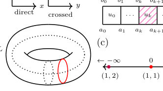
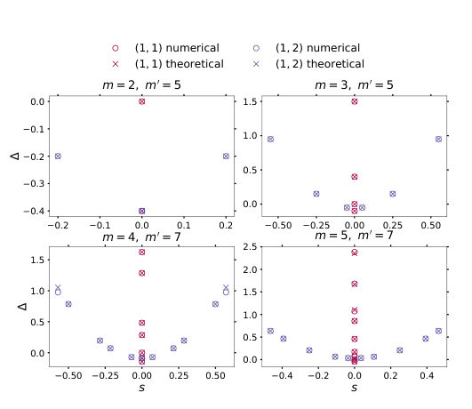
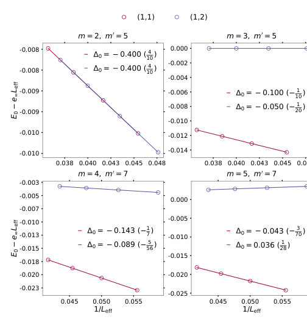
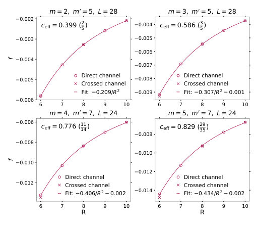
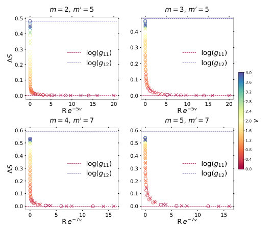
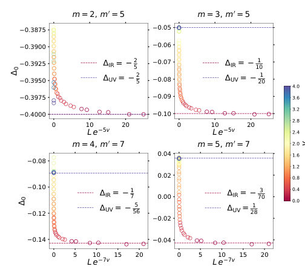
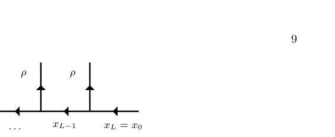
Main problem. The investigation of topological defects and Renormalization Group (RG) flows between different fixed points in non-unitary conformal field theories (CFTs).
Main result. The study establishes a framework to study non-unitary CFT defects via lattice models, demonstrating a monotonic RG flow between fixed points and verifying that defect operator eigenvalues match analytical predictions.
Method. The authors use integrable lattice models, specifically the Temperley-Lieb algebra and RSOS models, combined with exact diagonalization and finite-size scaling analysis.
Summary. This paper explores how topological defects behave in non-unitary conformal field theories using lattice-based RSOS models. By constructing a parameter-dependent Hamiltonian, the authors are able to numerically track the Renormalization Group flow between different fixed points. They successfully demonstrate that the numerical results for conformal dimensions and operator expectation values align with theoretical predictions from the modular S-matrix. The work also establishes a connection between anyonic chains and these non-unitary RSOS models.
Model / system. The system consists of quantum RSOS(m, m') chains and anyonic chain models derived from Galois conjugated su(2)k fusion categories, which serve as the lattice counterparts to non-unitary minimal models.
Key observables. Conformal dimensions (scaling dimension and conformal spin), central charge, thermodynamic entropy, ground-state energy, and expectation values of defect line operators.
Important parameters / regimes. The defect parameter v (interpolating between identity and Kramers-Wannier defects), the integers m and m' defining the RSOS model, and the impurity strength/Kondo temperature scale.
Assumptions / limitations. The study assumes the co-primality of certain integers (p and k+2) and is limited by the small system sizes accessible via exact diagonalization.
Figures summary. Figure 1 shows schematics of topological defects and transfer matrices; Figure 2 and 3 plot conformal dimensions; Figure 4 shows free energy density; Figure 5 displays thermodynamic entropy scaling; Figure 6 shows the evolution of conformal dimensions with the defect parameter; Figure 7 illustrates fusion trees.
Paper structure. The paper begins by defining the lattice RSOS and anyonic models, moves to the construction of the defect Hamiltonian and algebraic framework, presents numerical results for energy spectra and operator eigenvalues, analyzes RG flows and thermodynamic scaling, and concludes with the equivalence of anyonic and RSOS models.
Topological defects play a fundamental role in the investigation of symmetries in quantum field theories. For conformal field theories in two space-time dimensions, it is possible to construct these defects using lattice models allowing ab-initio analytical and numerical computations of their characteristics. In this work, topological defects are investigated in non-unitary conformal field theories using appropriate variations of the restricted solid-on-solid models. The relevant impurity models and the corresponding defect operators are constructed for the lattice system. Numerical computations are performed for the energy spectrum, eigenvalues of the defect operators as well as thermodynamic characteristics and compared with analytical predictions. Finally, renormalization group flows between the different fixed points are analyzed using numerical methods.
Authors: Leonardo A. Pachon
Type: theory · Category: other · PDF: https://arxiv.org/pdf/2604.26287v1
Analysis basis: full PDF text, analyzed in chunks
Topic relevance: entanglement & information structure 2/5
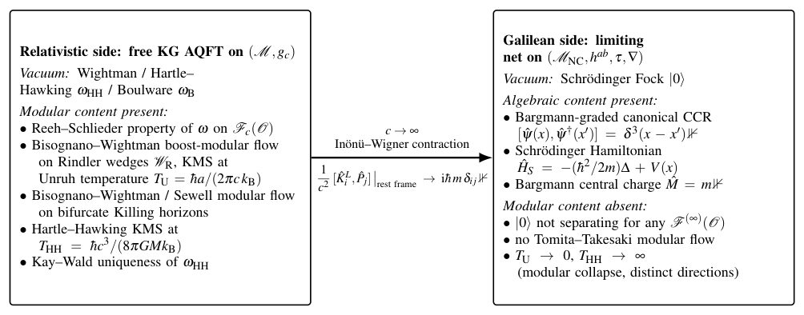
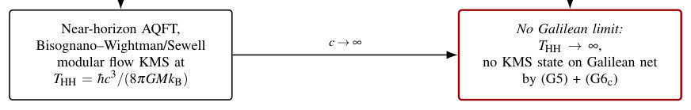
Main problem. Investigating the structural collapse of the modular (thermodynamic) structure, specifically the Reeh-Schlieder property and Tomita-Takesaki modular flow, when taking the Newton-Cartan (non-relativistic) limit of relativistic quantum field theory.
Main result. The paper proves that the relativistic modular structure entirely collapses in the c -> infinity limit, as the Bargmann mass-charge superselection prevents the vacuum from being a separating vector. It also establishes a new 'Galilean Hadamard condition' to characterize the short-distance singularity structure in the non-relativistic regime.
Method. The author uses the Inoniu-Wigner contraction of the Poincaré algebra, Post-Newtonian expansions of the metric, and the GNS reconstruction of the field net, alongside heat-kernel expansions to analyze short-distance behavior.
Summary. This paper explores what happens to the fundamental algebraic properties of quantum field theory when transitioning from relativistic to non-relativistic physics. It demonstrates that key relativistic features, such as the Unruh and Hawking effects and the Reeh-Schlieder property, fundamentally disappear in the Newton-Cartan limit. The work provides a rigorous mathematical framework for defining quantum fields in a non-relativistic, curved-space setting. By establishing a 'Galilean Hadamard condition,' it offers a way to handle short-distance singularities in non-relativistic quantum field theory.
Model / system. The study focuses on the Klein-Gordon field on Minkowski and static globally hyperbolic spacetimes (such as Schwarzschild and Reissner-Nordstrom metrics) transitioning to a Newton-Cartan structure with a Schrödinger-type Hamiltonian.
Key observables. Wightman two-point functions, Bargmann mass-charge, Hawking and Unruh temperatures, and the spectrum of the Schrödinger Hamiltonian.
Important parameters / regimes. The speed of light (c -> infinity limit), the Bargmann central charge (mass m), the Newtonian potential V(x), and the gravitational constant G.
Assumptions / limitations. The derivation assumes a fixed background metric (no backreaction) and focuses on static spacetimes; the construction is limited to the leading-order Post-Newtonian expansion.
Figures summary. Figure 1 provides a schematic comparison between the relativistic side (presence of modular flow and thermal states) and the Galilean side (absence of modular content). Figure 2 illustrates the non-commutativity of the c -> infinity and near-horizon limits.
Paper structure. The paper begins by defining the Newton-Cartan limit of the KG field, proceeds to prove the existence of the limiting net and the collapse of the Reeh-Schlieder property, extends these results to curved static backgrounds, and concludes with a discussion on the short-distance singularity structure and the new Galilean Hadamard condition.
We extend the established Galilean/relativistic structural divider in algebraic quantum field theory, namely, the absence of Reeh-Schlieder and of Tomita-Takesaki modular flow on local algebras of any Galilean Haag-Kastler net satisfying a natural axiom set augmented by the Bargmann-charge hypotheses (G7$^*$)(a) and (G7$^*$)(d) to curved backgrounds via the Newton-Cartan ($c\to\infty$) limit. We show, for the free Klein-Gordon field on Minkowski and on static globally hyperbolic spacetimes admitting a Post-Newtonian expansion, that a position-independent rest-energy rescaling produces in the limit a Galilean Haag-Kastler net satisfying the axioms of Ref. [1] in flat-space form (Minkowski) or in a curved-space modification (Killing-flow invariance and uniqueness of the vacuum replacing full translation invariance) appropriate to the static case. The Bargmann central charge equals the Klein--Gordon mass~$m$; the gravitational potential $V(x)$ enters the limiting Schrödinger Hamiltonian but not the algebraic structure obstructed by the Galilean Reeh-Schlieder no-go theorem. The strengthened obstruction theorem of Ref. [1] extends to the modified curved-space setting on Fock representations, and the limiting net carries no modular flow on local algebras. Schwarzschild is treated as a worked example: the Killing horizon shrinks to a point, the Hartle-Hawking thermal state has no $c\to\infty$ limit, and the Boulware vacuum limits to the gravitational hydrogenic ground state. The Reissner-Nordström metric is included as a sanity check confirming that leading Post-Newtonian misses the electromagnetic content of the background. We discuss how Newton's constant~$G$ enters the present (background-metric) framework only at the level of the limiting Hamiltonian, and indicate where dynamical-metric extensions would require $G$ to play a structural role.
Authors: Kevin M. Ryan, Detlef Beckmann, Venkat Chandrasekhar
Type: both · Category: other · PDF: https://arxiv.org/pdf/2604.26862v1
Analysis basis: full PDF text, analyzed in chunks
Topic relevance: non-equilibrium dynamics 2/5
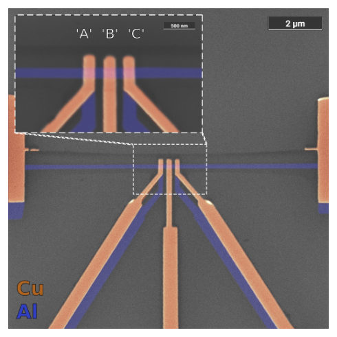
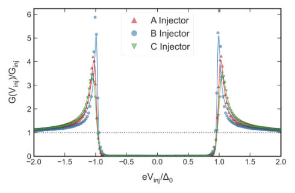
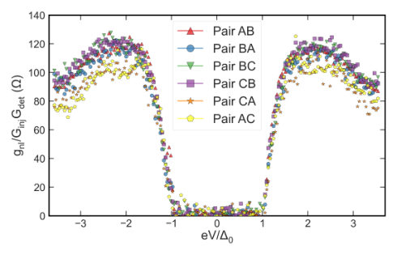
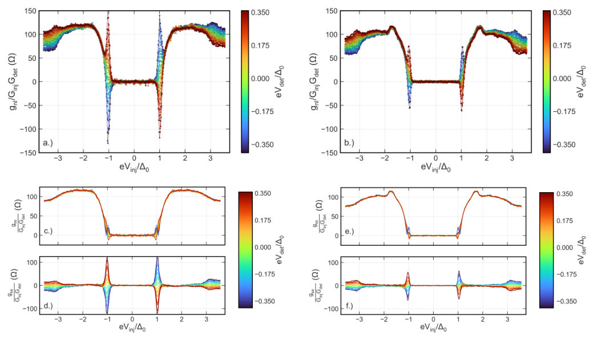
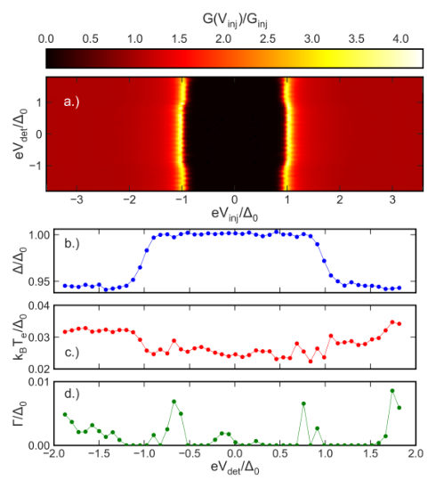
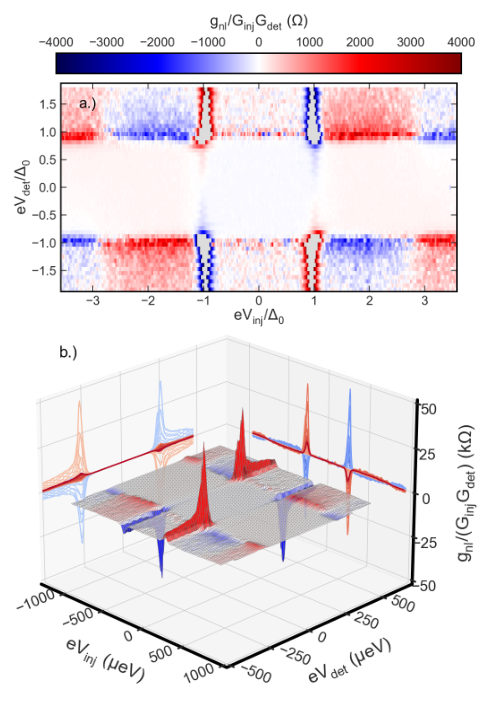
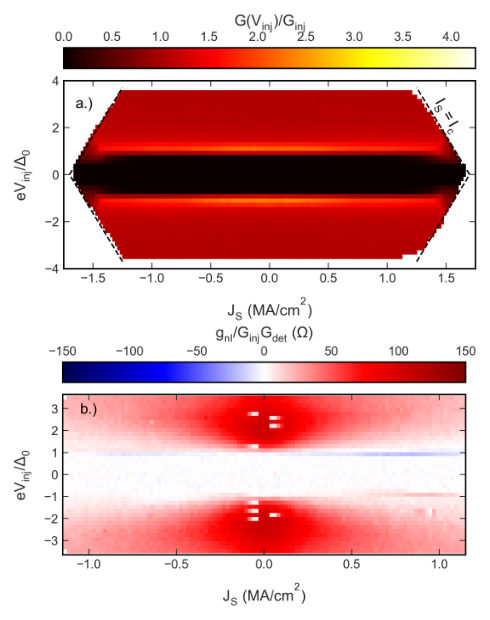
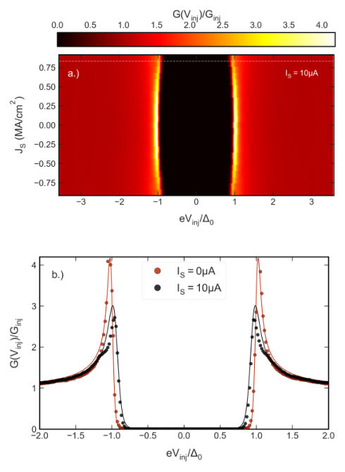
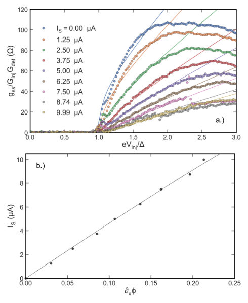
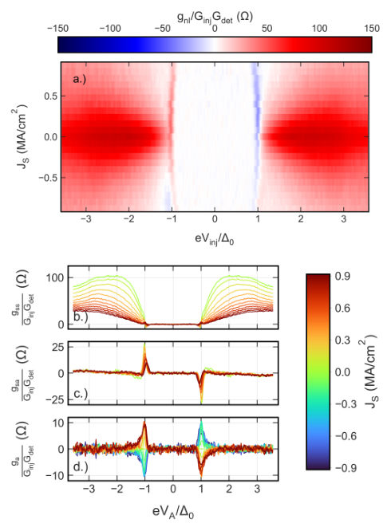
Main problem. Investigating the non-local transport and relaxation of non-equilibrium quasiparticles (charge and energy imbalance) in 1-D superconducting wires.
Main result. The study identifies a transition from charge-carrying to charge-neutral excitations at energies around 3-Delta and demonstrates how supercurrents drive the interconversion of charge and energy modes.
Method. Non-local tunneling spectroscopy using a dual-bias scheme in NIS junctions, combined with quasiclassical simulations using the Usadel equations.
Summary. This paper explores how quasiparticles move and relax in one-dimensional superconducting wires. By using a specialized dual-bias measurement technique, the authors can distinguish between charge and energy imbalance modes. They observe that at high injection energies, quasiparticles can break Cooper pairs, leading to a change in transport behavior. The study also shows how applied supercurrents can manipulate these non-equilibrium states, providing deep insight into the kinetics of superconductors.
Model / system. Mesoscopic three-terminal Cu and Al NIS tunnel junction devices featuring 1-D ultra-thin Aluminum wires in the millikelvin, dirty-limit superconducting regime.
Key observables. Non-local conductance (g_nl), local conductance (G), charge imbalance (Q*), and the superconducting gap (Delta).
Important parameters / regimes. Superconducting gap (Delta_0), coherence length (xi), Thouless length (L_T), and the energy-dependent inelastic scattering time.
Assumptions / limitations. The magnitude of the pair potential is assumed constant along the wire, and the effect of charge imbalance on the phase is neglected due to small tunnel currents.
Figures summary. Figures show the decomposition of non-local conductance into symmetric/antisymmetric components, heatmaps of local conductance under varying bias and supercurrent, and the evolution of the pair potential and distribution functions.
Paper structure. The paper introduces the experimental platform, details the symmetry-based decomposition of conductance, presents results on quasiparticle relaxation and energy-dependent scattering, explores the impact of high supercurrents, and concludes with the effects of in-plane magnetic fields.
Non-local conductance experiments using tunnel junctions can provide valuable spectroscopic information on both the transport and relaxation of quasiparticles in superconductors, as these techniques directly probe the quasiparticle charge and energy imbalance even at mK temperatures. In this work, we employ mesoscopic three terminal Cu and Al NIS devices to study non-local quasiparticle transport over length-scales on the order of the superconducting coherence length in this regime. Via a dual-bias scheme, which utilizes detector biases both above and below the superconducting gap, we are able to extract the effect of quasiparticle energy imbalance via its impact on the self consistent pair potential by symmetry considerations. We observe non-local conductance features due to pair-breaking which are anti-symmetric with respect to the polarity of the voltage bias, with a sharp onset during single electron tunneling at energies around $3Δ$. We compare these findings with quasiclassical simulations including inelastic effects to obtain estimates of the energy dependent inelastic scattering time. In addition, we demonstrate kinetic effects due to a large applied supercurrent which can also be captured in this formalism and decomposed with respect to the particle-hole symmetry and supercurrent direction, and discuss further opportunities for the advancement of this method.
Authors: Sangjin Lee, Sangkook Cho
Type: theory · Category: quantum information and computing · PDF: https://arxiv.org/pdf/2604.26263v1
Analysis basis: full PDF text, analyzed in chunks
Topic relevance: non-equilibrium dynamics 2/5
Main problem. Quantum simulation faces a trade-off between the high gate complexity of Trotterization and the limited error scaling of qDRIFT. The goal is to achieve higher-order error scaling without increasing the circuit depth's dependence on the number of Hamiltonian terms.
Main result. The authors introduce qSHIFT, an adaptive sampling protocol that achieves an improved error scaling of O(t^(1+r)) for an adjustable parameter r, while maintaining L-independent gate complexity.
Method. qSHIFT uses an adaptive sampling scheme that updates probability distributions at each round by solving a classical system of L^r linear equations. It employs a quasi-probability sampling scheme to handle negative coefficients via a normalization factor Z.
Summary. The paper presents qSHIFT, a new adaptive sampling protocol for quantum Hamiltonian simulation. Unlike standard Trotter methods that increase circuit depth with the number of terms, or qDRIFT which has limited error scaling, qSHIFT achieves higher-order accuracy O(t^(1+r)) with L-independent gate complexity. It works by adaptively updating sampling weights through a classical subroutine. This makes it a resource-efficient framework for high-precision simulation on near-term quantum devices.
Model / system. The protocol is applied to a general Hamiltonian H = sum(h_i H_i) with positive coefficients, specifically demonstrated on a 1D Transverse Field Ising Model (TFIM) with six qubits.
Key observables. The time-evolution of a physical observable Q, specifically the total magnetization Q = sum(Z_i) in the TFIM example.
Important parameters / regimes. N (total sampling steps), r (operators per round/expansion order), L (number of Hamiltonian terms), t (evolution time), and epsilon (target precision).
Assumptions / limitations. Assumes the number of sampling steps N is a multiple of r and that Hamiltonian terms can be grouped to keep L independent of system size. It also assumes the ability to solve the L^r linear system classically.
Figures summary. Figure 1 compares the algorithmic errors of qDRIFT and various qSHIFT configurations ((N,r) = (2,2) and (3,3)) for the 1D TFIM, showing superior power-law error decay for qSHIFT as a function of time t.
Paper structure. The paper introduces the simulation trade-off, presents the qSHIFT protocol and its mathematical derivation (including commutator expansions and quasi-probability handling), provides a complexity analysis comparing it to Trotter and qDRIFT, and validates the results with numerical simulations on the TFIM.
Why it may be interesting. This is highly relevant for many-body dynamics as it provides a scalable way to perform high-precision time-evolution simulations on NISQ-era hardware by reducing circuit depth while improving error scaling.
Quantum simulation is a cornerstone application for quantum computing, yet standard methods face a trade-off between circuit depth and accuracy: Trotterization depth scales with the number of Hamiltonian terms $L$, while sampling-based qDRIFT is restricted to $O(t^2)$ error scaling. Here, We introduce qSHIFT, an adaptive sampling protocol that overcomes these limitations. By adaptively updating sampling distributions, qSHIFT maintains $L$-independent gate complexity while achieving an improved error scaling of $O(t^{1+r})$ for an adjustable parameter $r$. This performance is enabled by a classical subroutine solving $L^r$ linear equations per sampling round. Numerical demonstrations confirm the $O(t^{1+r})$ scaling, showcasing qSHIFT as a resource-efficient framework for high-precision quantum simulation. Furthermore, the protocol's reduced circuit depth enhances its compatibility with physical error mitigation, making it a promising candidate for implementation on near-term quantum devices. In addition to its role as a standalone algorithm, qSHIFT can provide a high-precision foundation for modular quantum frameworks such as qSWIFT or Krylov quantum diagonalization.
Authors: Kok Hong Thong, David Vegh
Type: theory · Category: other · PDF: https://arxiv.org/pdf/2604.26007v1
Analysis basis: full PDF text, analyzed in chunks
Topic relevance: entanglement & information structure 2/5
Main problem. The standard positivity-based quantum mechanical bootstrap is insufficient to determine the energy spectrum of the SYK bilinear model because it is degenerate with respect to boundary conditions. The authors aim to develop a 'direct bootstrap' method to resolve this degeneracy and uniquely identify the spectrum.
Main result. The authors successfully implement a 'direct bootstrap' using equality constraints from fractional-power operators, which converges to the exact energy eigenvalues of the SYK bilinear spectrum as the truncation order increases. They demonstrate that this method overcomes the failure of positivity-based bounds to isolate the spectrum.
Method. The method uses a 'direct bootstrap' approach involving commutator recursion relations and Taylor expansions of fractional-power operators. It addresses boundary anomalies by using operator families that probe different boundary conditions, effectively turning the problem into a system of algebraic equality constraints.
Summary. This paper introduces a 'direct bootstrap' method to solve for the energy spectrum of the SYK model's bilinear operators. While traditional bootstrap methods using positivity constraints fail due to boundary condition degeneracy, this new approach uses equality constraints derived from fractional-power operators. The authors show that this method accurately recovers the exact eigenvalues as the numerical truncation order increases. This provides a new tool for studying systems where boundary conditions are critical to the spectrum.
Model / system. A quantum mechanical system defined on the interval [0, 1] whose spectrum matches the bilinear operators of the Sachdev-Ye-Kitaev (SYK) model. The Hamiltonian is related to the Casimir operator of a folded string in AdS2 and involves conjugate operators Z and S.
Key observables. Energy eigenvalues (E_a or h) and dressed correlators (expectation values of bilinear operators).
Important parameters / regimes. Conformal dimension (Delta), Robin boundary parameter (r), and the truncation order (N or K).
Assumptions / limitations. The method assumes the finiteness of correlators as the regularization parameter epsilon approaches zero and relies on the validity of Taylor expansion truncation.
Figures summary. Tables show convergence of energy eigenvalues for specific Delta values; Figure 3 compares bootstrap results to exact curves for general boundary conditions; Figure 4 shows power-law decay of truncation error; Figure 5 illustrates the large 'islands' of allowed regions in the positivity-based bootstrap compared to the targeted spectrum.
Paper structure. The paper begins by defining the Hamiltonian and its connection to the SYK model, identifies the failure of standard positivity bounds, introduces the fractional-power operator basis for the direct bootstrap, details the handling of boundary anomalies, and concludes with numerical validation and convergence analysis.
We study a quantum mechanical system whose spectrum coincides with that of bilinear operators of the Sachdev-Ye-Kitaev model. The standard positivity-based quantum mechanical bootstrap is degenerate with respect to the boundary data: it does not distinguish the boundary conditions that select the SYK spectrum, and hence is insufficient to determine the eigenvalues. Instead, by considering fractional powers of operators, we obtain constraint equations that determine the spectrum without imposing positivity. The resulting roots converge to exact eigenvalues as the truncation order increases. We call this the direct bootstrap.
Authors: Alain Giresse Tene, Thomas Konrad
Type: theory · Category: quantum information and computing · PDF: https://arxiv.org/pdf/2604.26098v1
Analysis basis: full PDF text, analyzed in chunks
Topic relevance: quantum measurements 2/5
Main problem. Solving a system of linear equations (Mx = b) on a quantum computer while overcoming the limitations of existing variational algorithms, such as the need for Pauli string decomposition and sensitivity to the matrix condition number.
Main result. The proposed 'measurement test algorithm' allows for solving dense matrices without Pauli decomposition, achieves accuracy independent of the condition number (given sufficient qubits), and exhibits Heisenberg scaling for error relative to measurement shots.
Method. A variational algorithm for fault-tolerant quantum computing that uses a parameterized ansatz and the Phase Estimation Algorithm (PEA) to maximize the probability of measuring a zero eigenvalue of a specific self-adjoint operator.
Summary. This paper introduces a new variational algorithm for solving linear systems on fault-tolerant quantum computers. Unlike previous methods that struggle with dense matrices due to the need for Pauli string decomposition, this approach uses a measurement-based technique to directly maximize target fidelity. The algorithm is robust against high condition numbers and achieves high accuracy that scales efficiently with the number of measurements. This makes it a promising candidate for large-scale quantum linear algebra tasks.
Model / system. A mathematical model of a linear system Mx = b, where M is a dense, real-valued, invertible matrix, implemented on a fault-tolerant quantum computing platform using amplitude encoding.
Key observables. The target fidelity (probability of projecting into the target state) and the zero eigenvalue of the self-adjoint operator A.
Important parameters / regimes. The matrix condition number (kappa), the number of measurement shots (N), the number of qubits in the output register (m), and the target fidelity error (epsilon).
Assumptions / limitations. Assumes the availability of fault-tolerant quantum computing to implement the Phase Estimation Algorithm and that the operator A can be implemented via PEA.
Figures summary. Figure 1 shows the ansatz circuit architecture; Figure 2 displays the full quantum circuit with PEA; Figures 3-5 illustrate the convergence of target fidelity and the impact of shot counts; Figures 6-8 compare the statistical stability and error scaling of this algorithm against VQLS.
Paper structure. The paper introduces the problem of linear systems, defines the measurement test algorithm and its mathematical framework, describes the implementation via PEA, presents numerical simulations for dense matrices, and provides a comparative analysis against existing VQLS methods.
We present a variational algorithm for fault tolerant quantum computing to solve a system of linear equations which directly maximises the parameters of the target fidelity. This so-called measurement test algorithm can be applied to any computational task with a solution that is represented as eigenvector of a self-adjoint matrix. The solution is prepared as state of a register in the quantum computer by a von Neumann measurement of a corresponding observable, which is implemented using the phase estimation algorithm. The probability to project the system thus into the unknown target state, which equals the target fidelity, is measured in terms of relative frequencies and iteratively optimised to read out the target state. The new algorithm overcomes three issues of previous variational quantum algorithms: i) It does not rely on a decomposition in terms of Pauli strings and therefore can compute eigenvectors of dense matrices. ii) The accuracy is not limited by the condition number $κ$ of the matrix, provided a logarithmic number ($O(\logκ)$) of qubits is used to encode the eigenvalues and iii) the target fidelity $F_T = 1-ε$ can be reached with an accuracy $ε$ that scales with $1/N$ for $N$ measurements per iteration. We demonstrate this by numerical simulations for dense random real-valued $16\times 16$ matrices with non-vanishing determinant.
Authors: Zheng-Chuan Wang
Type: theory · Category: other · PDF: https://arxiv.org/pdf/2604.26639v1
Analysis basis: abstract only; PDF text extraction failed or PDF unavailable
Topic relevance: non-equilibrium dynamics 2/5
Main problem. The paper investigates how the geometric phase of a quantum system changes when the adiabatic evolution involves an environment at a finite temperature.
Main result. The authors derive a temperature-dependent geometric phase and a temperature-dependent effective potential arising from an Abelian gauge potential induced by a Born-Oppenheimer-like approximation.
Method. The study employs a Born-Oppenheimer approximation framework applied to a system interacting with an environment in thermal equilibrium.
Summary. This paper explores the emergence of a temperature-dependent geometric phase in quantum systems. By applying a Born-Oppenheimer-like approximation to a system interacting with a thermal environment, the authors show that the resulting Abelian gauge potential leads to temperature-sensitive geometric and effective potentials. The effect is specifically demonstrated using the H2+ ion as a model system.
Model / system. The theoretical framework is demonstrated using the H2+ ion system.
Key observables. Temperature-dependent geometric phase and temperature-dependent effective potential.
Important parameters / regimes. Temperature of the environment, adiabaticity of the evolution.
Assumptions / limitations. The environment is assumed to be in an equilibrium state, and the interaction follows a Born-Oppenheimer-like adiabatic procedure.
Paper structure. The paper introduces the concept of a temperature-dependent geometric phase via the Born-Oppenheimer approximation, derives the resulting Abelian gauge potential and effective potential, and provides a demonstration using the H2+ ion system.
Why it may be interesting. This is interesting for researchers in open quantum systems and AMO physics because it provides a mechanism for temperature to influence topological/geometric properties of quantum states through environmental coupling.
There exists a geometric phase for a quantum state during the adiabatic evolution of the system. If the adiabatic procedure happens between the system and the environment interacting with it similar to Born-Oppenheimer (BO) approximation, we can introduce a temperature into the environment, which can be regarded as in an equilibrium state. Then a temperature-dependent geometric phase can be obtained for the system, which originates from the Abelian gauge potential induced by the BO approximation. This gauge potential contributes to the effective potential of the system, which is temperature dependent, too. Finally, we demonstrate them using an example of H_2^+ ion system.
Papers from primary archives without highlighted authors or any topic match. Click to expand.
Authors: Ban Q. Tran, Duong M. Chu, Hai T. D. Pham, Viet Q. Nguyen, Quan A. Pham, Susan Mengel
Type: theory · Category: quantum information and computing · PDF: https://arxiv.org/pdf/2604.26110v1
Analysis basis: full PDF text, analyzed in chunks
Main problem. The study addresses the lack of a rigorous evaluation regarding the accuracy, generalization, and robustness of various Quantum Neural Network (QNN) architectures against both adversarial attacks and quantum noise in NISQ environments.
Main result. The researchers found a fundamental trade-off between accuracy and robustness: QViT achieves high accuracy but is highly vulnerable to adversarial attacks, whereas QRNN and QCNN demonstrate superior resilience to perturbations and quantum noise.
Method. A comparative analysis of three hybrid classical-quantum architectures (QCNN, QRNN, and QViT) using MNIST and CIFAR-10 datasets, subjected to adversarial attacks (APGD, PGD, etc.) and various quantum noise models (depolarizing, amplitude damping, etc.).
Summary. This paper provides a comprehensive benchmark of three prominent quantum neural network architectures. It reveals that while transformer-based models (QViT) excel in accuracy on simple tasks, they are extremely fragile to noise and adversarial attacks. In contrast, recurrent and convolutional quantum models offer much better stability in noisy, intermediate-scale quantum environments. This work is crucial for guiding the selection of quantum machine learning models for practical, noisy hardware.
Model / system. Hybrid Classical-Quantum Neural Networks (HCQNNs) including Quantum Convolutional Neural Networks (QCNN) based on MERA-like structures, Quantum Recurrent Neural and Quantum Vision Transformers (QViT) utilizing quantum self-attention cores.
Key observables. Classification accuracy, generalization error, Lipschitz constant (to measure sensitivity), average fidelity, and adversarial success rate (ASR).
Important parameters / regimes. Feature dimensionality (low vs. high), perturbation intensity (epsilon), noise types (bit-flip, phase-flip, amplitude damping, depolarizing), and number of training samples.
Assumptions / limitations. The study assumes the use of classical optimizers (Adam) to mitigate the barren plateau problem and is limited to a 15-qubit simulation environment.
Figures summary. Schematics of the three architectures; comparison of adversarial success rates across different attack methods; plots of accuracy and generalization error versus training set size; and the impact of various quantum noise channels on model performance.
Paper structure. The paper introduces the QML landscape, details the specific architectures (QCNN, QRNN, QViT), describes the experimental setup for noise and adversarial testing, presents comparative results on accuracy and robustness, and concludes with limitations and future directions.
Quantum Machine Learning (QML) has recently emerged as a highly promising research frontier. Within this domain, Quantum Neural Networks (QNNs),characterized by Variational Quantum Circuits (VQCs) at their core and featuring layers of quantum gates optimized by classical algorithms, have garnered significant attention. However, a rigorous and exhaustive evaluation of their practical performance remains largely incomplete. In this study, we conduct a comprehensive comparative analysis of three prominent hybrid classical-quantum architectures: Quantum Convolutional Neural Networks (QCNN), Quantum Recurrent Neural Networks (QRNN), and Quantum Vision Transformers (QViT), focusing on the critical dimensions of generalization, accuracy, and robustness. Our findings provide novel insights that address previous evaluative gaps. Notably, while these models exhibit exceptional performance on low-feature datasets such as MNIST, their learning efficacy degrades significantly when transitioned to high-feature datasets. Furthermore, convolutional-based models like QCNN appear less effective on high-dimensional data than other machine learning architectures. Additionally, while all models are susceptible to adversarial noise, traditional architectures, such as recurrent and convolutional networks, demonstrate superior resilience. Conversely, in the presence of quantum noise, the transformer-based architecture proves its strength by maintaining high robustness against measurement noise, channel noise, and finite-shot effects, whereas other architectures suffer marked performance declines. These results provide a granular perspective on the current state of the field and underscore the critical importance of tailoring model selection to the constraints of contemporary Noisy Intermediate-Scale Quantum (NISQ) environments.
Authors: Ejaz Ahmed, Boshuai Ye, Syed Hamza Shah, Muhammad Azeem Akbar, Arif Ali Khan
Type: theory · Category: quantum information and computing · PDF: https://arxiv.org/pdf/2604.26430v1
Analysis basis: full PDF text, analyzed in chunks

Main problem. Existing quantum circuit validation methods are fragmented, failing to detect 'structural blind spots' where circuit transformations preserve global properties like gate count but alter computational behavior.
Main result. A multi-level framework (SIS, OIS, IGS) is necessary because structural similarity does not guarantee behavioral equivalence; specifically, OIS can detect 93.85% of anomalies that structural metrics miss.
Method. The authors propose a three-layer metric framework combining Structural Integrity Score (SIS), Operational Integrity Score (OIS) via Jensen-Shannon distance, and Interaction Graph Score (IGS) using graph-based representations, tested via controlled anomaly injection.
Summary. This paper addresses the challenge of ensuring quantum circuit integrity in the NISQ era, particularly against accidental or adversarial modifications. It identifies that structural analysis alone is insufficient because certain gate changes do not alter global circuit descriptors. By proposing a multi-layered approach that integrates structural, interaction-level, and behavioral metrics, the authors provide a more robust way to detect hidden circuit deviations. The framework offers a trade-off between the high accuracy of execution-based methods and the computational efficiency of graph-based pre-execution analysis.
Model / system. The study uses quantum circuits from the QASMBench suite, modeled as Directed Acyclic Graphs (DAGs), and simulated using the Qiskit Aer backend.
Key observables. Gate count, circuit depth, interaction topology, output probability distributions, and Jensen-Shannon distance.
Important parameters / regimes. Anomaly severity levels (0.1, 0.3, 0.6) and circuit scales ranging from small to 40 qubits.
Assumptions / limitations. The study assumes an idealized environment without hardware noise or physical device variability and uses a predefined taxonomy of perturbations.
Figures summary. Figure 1 shows the framework workflow; Figure 2 shows SIS and OIS performance across anomaly types; Figure 3 shows IGS degradation; Figure 4 shows the divergence between metrics; Figure 6 compares the computational runtime of IGS versus OIS.
Paper structure. The paper introduces the problem of circuit integrity, proposes a three-layer metric framework (SIS, OIS, IGS), details the anomaly injection methodology, presents experimental results on detection performance and scalability, and concludes with limitations and future directions.
Ensuring the integrity of quantum circuits is a significant challenge in the Noisy Intermediate-Scale Quantum (NISQ) era, where circuits are subject to compilation transformations, hardware constraints, and potential adversarial modifications. Existing validation approaches typically rely on either structural analysis or behavioral evaluation, leading to incomplete assessment of circuit correctness. In this work, we investigate the relationship between structural, interaction-level, and behavioral perspectives of circuit integrity, demonstrating that a single aspect of integrity is insufficient to guarantee circuit integrity; structural similarity alone does not ensure behavioral equivalence. To address this problem, we use a three-layer metric framework that combines the Structural Integrity Score (SIS), the Operational Integrity Score (OIS), and the Interaction Graph Semantic-Logical Score (IGS). SIS captures global structural properties, OIS quantifies behavioral divergence using Jensen-Shannon distance, and IGS models interaction patterns and dependencies in a pre-execution setting. Through controlled anomaly injection on benchmark quantum circuits, we demonstrate that each metric captures a different aspect of circuit deviation. In particular, structural blind-spot cases (SIS >= 0.95) reveal a clear limitation of structural analysis, where OIS detects anomalies in 93.85% of instances, while IGS detects 72.58%. These results highlight that the metrics provide complementary insights and that a single metric is insufficient for reliable circuit validation.
Authors: Leonardo A. Pachon
Type: theory · Category: other · PDF: https://arxiv.org/pdf/2604.26267v1
Analysis basis: full PDF text, analyzed in chunks
Main problem. Investigating whether the algebraic axioms of quantum field theory, specifically microcausality and positive energy, structurally necessitate special relativity over Galilean kinematics.
Main result. The author establishes an algebraic framework where the photon sector of QED is a realization of a single quantum postulate and proposes the SR-selection conjecture, suggesting Galilean kinematics are incompatible with a Haag-Kastler net supporting sharper-than-equal-time microcausality.
Method. The paper utilizes operator-algebraic methods, including Weyl C*-algebras, Tomita-Takesaki modular theory, and the GNS construction, to analyze the compatibility of kinematic groups with local algebras.
Summary. This paper presents the first in a series exploring the deep algebraic link between quantum mechanics and special relativity. It shows that fundamental properties like photon energy quantization and spin are theorems derived from a single algebraic postulate applied to classical electromagnetism. Crucially, it proposes that the requirements of local quantum field theory (specifically microcausality) effectively 'select' relativistic physics by making Galilean kinematics structurally inconsistent. This provides a potential foundation for understanding why the universe obeys relativistic rather than Newtonian laws at a fundamental algebraic level.
Model / system. The primary model is the photon sector of free Quantum Electrodynamics (QED) in 3+1 dimensions, treated via a classical Fourier-Maxwell scaffold and quantized using canonical commutation relations.
Key observables. Energy (E), momentum (p), helicity (spin), and the number operator (N).
Important parameters / regimes. Planck's constant (h-bar) as the deformation scale, the speed of light (c) as the geometric scale, and the Newtonian/Galilean limit (c to infinity).
Assumptions / limitations. Assumes the validity of Weyl C*-algebras, the existence of a positive-energy spectrum, and the requirement of sharper-than-equal-time microcausality.
Figures summary. Figure 2 illustrates the complementary roles of c and h-bar, showing c defining the geometry of light and null cones while h-bar acts as the bridge between kinematic phase rates and dynamical observables.
Paper structure. The paper introduces an algebraic framework for quantum kinematics, demonstrates its realization in the photon sector, establishes the structural roles of c and h-bar, and concludes by stating the SR-selection conjecture and a roadmap for a six-paper series.
We develop, as the first of a six-paper series, an operator-algebraic framework relating non-relativistic quantum mechanics and special relativity. Three structural facts organize the framework. (i)~The photon sector of free QED is a transparent realization: classical Fourier--Maxwell theory supplies a complex Hilbert-space scaffold (inner product, symplectic form, Schrödinger-form mode equation, polarization $\mathbb{C}^2$) with no quantum input, and a single canonical commutator with scale $\hbar$ on the mode amplitudes promotes it to single-photon QED, with photon indivisibility, the Planck relation $E=\hbarω$, and the spin spectrum $\pm\hbar$ as theorems. (ii)~The constants $c$ and $\hbar$ play non-interchangeable roles: $c$ is intrinsic to each Fourier-conjugate space, while $\hbar$ acts \emph{between} them, converting kinematic phase rates into dynamical observables. (iii)~Lifting the framework to a Haag--Kastler net with sharper-than-equal-time microcausality and positive-energy spectrum is structurally obstructed in the Galilean case; we state this as the SR-selection conjecture and identify three strands of evidence (Hegerfeldt spreading; absence of a known Galilean multi-particle resolution; Reeh--Schlieder failure on Galilean Haag--Kastler nets), the third established as a precise no-go theorem in the second paper of the series. The framework's modular content (Tomita--Takesaki, Bisognano--Wichmann, Unruh as KMS, type-$\mathrm{III}_1$ universality) is collected as the algebraic substrate on which the curved-background, dynamical-metric, and crossed-product extensions of the third through sixth papers operate.
Authors: Ram Kumar, K. E. Avers, V. Saini, D. S. Sokratov, Y. Anand, P. Saraf, J. A. Horn, N. Brenowitz, S. Otazo, P. Sobel, D. Graf, S. R. Saha, J. Paglione
Type: experiment · Category: strongly correlated electrons · PDF: https://arxiv.org/pdf/2604.26758v1
Analysis basis: full PDF text, analyzed in chunks
Main problem. Investigating the anisotropic magnetism, field-induced metamagnetic transitions, and the interplay between localized 4f magnetism and itinerant electronic topology in the heavy rare-earth system TbAlGe.
Main result. The study identifies a rich, field-tuned magnetic phase diagram with five distinct metamagnetic transitions (MMT1-MMT5) for fields along the a-axis and demonstrates significant magnetotransport anomalies up to 41.5 T.
Method. Experimental characterization using high-temperature self-flux crystal growth, followed by magnetization, heat capacity, and electrical transport measurements in magnetic fields up to 41.5 T.
Summary. This paper provides a comprehensive study of the magnetic and transport properties of TbAlGe single crystals. The researchers discovered a complex series of magnetic phase transitions that can be tuned with high magnetic fields, particularly along the a-axis. By observing multiple metamagnetic transitions and large magnetoresistance, the study establishes TbAlGe as a key platform for studying the interaction between magnetism and topological electronic states in a tunable semimetal.
Model / system. Single crystals of the orthorhombic TbAlGe (space group Cmcm), which features a distorted triangular lattice of Tb ions and exhibits complex magnetic interactions.
Key observables. Electrical resistivity, magnetization, magnetic susceptibility, heat capacity, magnetoresistance, and magnetic entropy change.
Important parameters / regimes. Neel temperatures (T_N1 = 40 K, T_N2 = 8 K), magnetic field strength (up to 41.5 T), and crystallographic axes (a, b, c).
Figures summary. Fig 1: Structural comparison and XRD refinement; Fig 2: Temperature-dependent susceptibility showing Neel transitions; Fig 3: Isothermal magnetization showing metamagnetic hysteresis; Fig 4: Heat capacity data; Fig 6: Magnetoresistance and phase evolution.
Paper structure. The paper begins with structural characterization, moves to zero-field magnetic and thermodynamic properties, details high-field magnetization and metamagnetic transitions, analyzes magnetotransport anomalies, and concludes with a discussion on the interplay between magnetism and topology.
We report a comprehensive investigation of the anisotropic magnetism and magnetic field-induced transitions in single crystals of the orthorhombic system TbAlGe, a member of the topological RAlGe (R = rare-earth) family with the highest ordering temeprature in the RAlX (X = Si, Ge) series. With a single rare earth site with triangular coordination in its Cmcm orthorhombic unit cell, TbAlGe harbors complex magnetic interactions that yield two antiferromagnetic transitions at 40 K and 8 K in zero field, and a rich cascade of metamagnetic transitions that only appear for fields directed along the crystallographic a-axis. Combining electrical resistivity, magnetization and heat capacity measurements with magnetotransport experiments performed up to 41.5 T, we construct a magnetic phase diagram mapping the multiple magnetic phases of TbAlGe, and discuss the complex interplay between localized 4f magnetism and itinerant electronic topology, establishing TbAlGe as a compelling platform for exploring tunable magnetic semimetal physics.
Authors: Zagorka Matić, Srboljub Simić, Peter Ván
Type: theory · Category: statistical mechanics · PDF: https://arxiv.org/pdf/2604.26846v1
Analysis basis: full PDF text, analyzed in chunks
Main problem. Achieving thermodynamic consistency in the constitutive modeling of Korteweg fluids, specifically ensuring compatibility between balance laws and the entropy balance law.
Main result. The derivation of a thermodynamically consistent model that includes a generalized Gibbs relation with capillary terms and demonstrates cross-coupling between mechanical and thermal effects via temperature-dependent coefficients.
Method. Liu's method of multipliers (Lagrange multipliers) applied to the entropy inequality to derive restrictions on constitutive functions.
Summary. This paper develops a mathematically rigorous framework for modeling Korteweg fluids using Liu's method of multipliers. It ensures that the resulting constitutive relations, such as the stress tensor and heat flux, are compatible with the second law of thermodynamics. A key finding is the derivation of a generalized Gibbs relation that incorporates density gradients and the discovery that temperature-dependent capillary coefficients lead to thermal-mechanical cross-coupling. This provides a consistent macroscopic description for fluids with diffuse interfaces.
Model / system. Korteweg fluids, which are weakly non-local fluids characterized by mass density gradients and capillary/surface tension effects.
Key observables. Entropy production, entropy flux, Korteweg stresses, and the generalized Gibbs relation.
Important parameters / regimes. Mass density (rho), temperature (theta), capillary coefficient (alpha), and transport coefficients (viscosity, thermal conductivity).
Assumptions / limitations. The specific entropy is assumed to have a functional form allowing for both equilibrium and non-equilibrium contributions; the symmetric part of the velocity gradient tensor is used in constitutive functions.
Paper structure. The paper begins with an algebraic lemma, applies the method to a simplified Euler fluid case to establish a baseline, and then extends the framework to the main subject of Korteweg fluids.
The paper studies constitutive modelling of Korteweg fluids. Thermodynamic consistency, i.e. compatibility with entropy balance law, is achieved using Liu's method of multipliers. Appropriate constitutive assumptions facilitated inclusion of the capillary effects in the specific entropy. Korteweg stresses are derived from the equilibrium conditions -- vanishing of the entropy production and its minimization in equilibrium. Material parameter in Korteweg stresses is allowed to depend on temperature, which turns out to be consistent with kinetic-theory results and leads to cross-coupling of mechanical and thermal effects. The generalized Gibbs' relation, which inherits the capillary effects, is derived as consequence, which is a peculiar feature of the Liu's method.
Authors: Per Arne Rikvold
Type: theory · Category: disordered systems and neural networks · PDF: https://arxiv.org/pdf/2604.26599v1
Analysis basis: abstract only; PDF text extraction failed or PDF unavailable
Main problem. The paper seeks to establish a method for constructing dispersion relations and identifying effective length scales for diffusion or oscillation processes on complex networks.
Main result. The authors successfully adapt a condensed-matter correlation length method to graph Laplacians, allowing for the identification of both distributed and localized eigenvectors across various network topologies.
Method. The method adapts the Debye-Anderson-Brumberger approach, calculating effective length scales as the ratio of twice the total number of edges to the number of edges connecting vertices with different eigenvector signs.
Summary. This paper introduces a way to study how waves or diffusion spread across complex, irregular networks. By adapting a technique used to study disordered materials, the author provides a way to measure the 'size' or length scale of network vibrations. The method is tested on a wide variety of real-world and artificial networks, revealing how some patterns stay localized while others spread across the whole system. This is important for understanding dynamics in any complex system, from biological neural networks to power grids.
Model / system. The study applies the method to nine different graph types, including tree graphs (with and without random shortcuts), a roundworm nervous system, a food web, a dolphin social network, an electrical power grid, and a model porous material.
Key observables. Effective length scales, dispersion relations, and discrete densities of states.
Important parameters / regimes. Eigenvalues of the graph Laplacian (representing inverse time scales) and the sign distribution of eigenvectors.
Assumptions / limitations. The method assumes that the ratio of volume to interface area can be meaningfully mapped to the ratio of total edges to sign-changing edges in a graph setting.
Figures summary. The figures show example eigenvectors, dispersion relations, and discrete densities of states in graphical format.
Paper structure. The paper begins with a pedagogical description of the method and necessary concepts, followed by the application of the method to nine diverse network models, and concludes with numerical results presented in graphs and tables.
To construct dispersion relations for diffusion or oscillation processes on random networks, it is necessary to obtain effective length scales for the eigenvectors of a graph Laplacian matrix, whose eigenvalues represent inverse time scales. For this purpose, we adapt a method originally introduced in condensed-matter physics to estimate correlation lengths for disordered materials as the ratio of volume to interface area [P. Debye, H.R. Anderson and H. Brumberger, J. Appl. Phys. 28, 679 (1957)]. In a graph setting of vertices connected by edges, we interpret this as the ratio of twice the total number of edges to the number of edges connecting vertices bearing values of different sign on the particular eigenvector. After describing the method and the necessary concepts in pedagogical detail, we apply it to nine different graphs representing natural and artificial networks, including two tree graphs without and with random shortcuts, the nervous system of a roundworm, a food web, a social network of dolphins, an electrical power grid, and a model porous material. The results identify both distributed and localized eigenvectors. They are given in graphical format showing example eigenvectors, dispersion relations, and discrete densities of states, as well as tables summarizing the main numerical results.
← Index · ← Previous · Next →